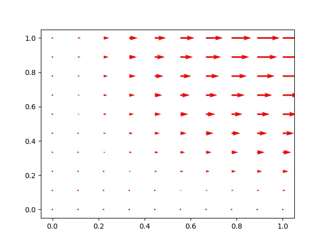

Green'in Teorisi, Uzaklaşım, Stokes
Green'in Teorisi
Bu teorinin detayları, ispatı [2]'de bulunabilir. Tekrar üzerinden geçmek gerekirse, [4, sf. 429] bazlı anlatalım, iki boyutta elimizde bir $D$ bölgesi etrafındaki $C$ eğrisi var, ve $F(x,y) = M(x,y) i + N(x,y) j$ $D$ içinde vektör alanı olsun, o zaman alttaki ifade doğrudur,
$$ \int_C M \mathrm{d} x + N \mathrm{d} Y = \int \int_D \left( \frac{\partial N}{\partial x} - \frac{\partial M}{\partial y} \mathrm{d} x \mathrm{d} y \right) $$
$\int_C$ ki bazen $\oint_C$ ile gösterilir, bir eğri üzerinden alınan bir entegraldır. Eşitliğin sol tarafı bazen bir $\mathrm{d}\vec{s}$ üzerinden de sunulabilir,
$$ \int_C \vec{F} \cdot \mathrm{d}\vec{s} = \int_C M \mathrm{d} x + N \mathrm{d} Y $$
Bu cebirsel bir özet sadece, $\mathrm{d}{\vec{s}} = [\begin{array}{cc} \mathrm{d} x & \mathrm{d} y \end{array}]^T$ sonuçta ve noktasal çarpım bize iki üstteki ifadeyi verecektir.
olarak ta gösterilebilir.
Örnek
Bir vektör alanı $\vec{F} = xy i + y^2 j$ olsun, ve bu alanda birinci dörtlük içinde $y = x$ çizgisi ve $y=x^2$ parabölü arasındaki bölgeyi düşünelim. Bu bölge ve alan üzerinden Green'in Teorisini doğrulamaya uğraşalım.
Grafik şu şekilde,

Vektör alanı (100 ile çarpıp vektörleri büyüttük gözüksün diye),
x = np.linspace(0,1.,10)
y = np.linspace(0,1.,10)
x,y = np.meshgrid(x,y)
SCALE = 100.0
u = x*y*SCALE; v = (y**2)*SCALE
v = np.zeros(y.shape)
q = plt.quiver(x,y,u,v,angles='xy',scale=1000,color='r')
p = plt.quiverkey(q,1,16.5,50,"50 m/s",coordinates='data',color='r')
plt.savefig('calc_multi_75_green_01.jpg')

Eğri iki parça olarak analiz edilecek, $C_1$ ve $C_2$. Eğri üzerinden gereken tüm entegral,
$$ \int_C \vec{F} \cdot \mathrm{d}{\vec{s}} = \int_C xy \mathrm{d} x + y^2 \mathrm{d} y $$
Bu entegral iki parça üzerinden alınmalı ve sonuç toplanmalı,
$$ = \int_{C_1} xy \mathrm{d} x + y^2 \mathrm{d} y + \int_{C_2} xy \mathrm{d} x + y^2 \mathrm{d} y \label{2} $$
Eğriyi parametrize edelim, böylece $\mathrm{d} x$, $\mathrm{d} y$ üzerinden entegraller kolaylaşsın,
$$ C_1: x = t, y = t^2, \quad 0 \le t \le 1 $$
$$ C_2: x = 1-t, y = 1-t, \quad 0 \le t \le 1 $$
$C_1$,$C_2$ gidişat yönlerine dikkat, mesela eğri ile yukarı çıkış var, ama düz eğri ile aşağı ınıyoruz, bu sebeple $t$ sıfırdan başlarken $x,y$ değerleri $(1,1)$, öyle ayarladık, ve en sonda $t=1$ olduğu anda $x,y$ değerleri $(0,0)$ oluyor.
Şimdi parametrize edilmiş değişkenlerle (2) formülünü tekrar yazalım,
$$ = \int_{0}^{1} ( t \cdot t^2 + t^4 \cdot 2t ) \mathrm{d} t + \int_{0}^{1} ((1-t)^2 + (1-t)^2) (-\mathrm{d} t) $$
$$ = \int_{0}^{1} (t^3 + 2t^5) \mathrm{d} t + \int _{0}^{1} 2 (1-t)^2 (-\mathrm{d} t) $$
$$ = (\frac{1}{4} t^4 + \frac{2}{6} t^6) \big\vert_{0}^{1} + (\frac{2}{3} (1-t)^3 ) \big\vert_{0}^{1} $$
$$ = \frac{1}{4} + \frac{2}{6} - \frac{2}{3} = -\frac{1}{12} $$
Green'in Teorisinin sağ tarafına bakalım şimdi,
$$ \int \int_D \frac{\partial N}{\partial x} - \frac{\partial M}{\partial y} \mathrm{d} x \mathrm{d} y = \int \int_D \left( \frac{\partial }{\partial x}(y^2) - \frac{\partial }{\partial y}(xy) \mathrm{d} x \mathrm{d} y \right) $$
$$ = \int_{0}^{1} \int_{x^2}^{x} -x \mathrm{d} y \mathrm{d} x = \int_{0}^{1} -x (x-x^2) \mathrm{d} x = \int_{0}^{1} (x^3 - x^2) \mathrm{d} x = (\frac{1}{4} x^4 - \frac{1}{3} x^3 ) \bigg\vert_{0}^{1} $$
$$ = \frac{1}{4} - \frac{1}{3} = -\frac{1}{12} $$
Aynı sonuca eriştik.
[devam edecek]
Gauss-Green Eşitliği
Gauss-Green eşitliği iki boyutta şu şekilde gösterilebilir [1, sf. 262],
$$ \iint_R (\nabla u ) \cdot w \mathrm{d} x \mathrm{d} y = \iint_R u (- \mathrm{div} w) \mathrm{d} x \mathrm{d} y + \int_C u w \cdot n \mathrm{d} s $$
Türetmek için başlangıç noktası $uv$ üzerinde uzaklaşım almak. Aslında ileride göreceğimiz gibi çok boyutta parçalı entegral tekniği Gauss-Green'in uzantısı bir bakıma ve tek boyutta gördük ki [3] parçalı entegrale erişmek için de Calculus'un çarpım kuralından başlanmıştı.
$$ \mathrm{div} (uw) = \mathrm{div} (u w_1 + u w_2) = \frac{\partial u}{\partial x} w_1 + \frac{\partial w_1}{\partial x} u + \frac{\partial u}{\partial y} w_2 + \frac{\partial w_2}{\partial y} u $$
Gruplarsak,
$$ = \left( \frac{\partial u}{\partial x} w_1 + \frac{\partial u}{\partial y} w_2 \right) + \left( \frac{\partial w_1}{\partial x} u + \frac{\partial w_2}{\partial y} u \right) $$
Daha kısa şekilde,
$$ \mathrm{div} (uw) = \nabla u \cdot w + u \mathrm{div}(w) $$
Üstteki ifade üzerinde Uzaklaşım Teorisi'ni uygulayalım. Önce $\iint_R \mathrm{div} (uw)$,
$$ \iint_R \mathrm{div} (uw) \mathrm{d} x \mathrm{d} y= \iint_R \nabla u \cdot w + u \mathrm{div}(w) \mathrm{d} x \mathrm{d} y $$
$$ = \iint_R \nabla u \cdot w \mathrm{d} x \mathrm{d} y + \iint_R u \mathrm{div}(w) \mathrm{d} x \mathrm{d} y $$
Uzaklaşım Teorisi'ne göre sağ taraf $\int_C uw \cdot n \mathrm{d} s$ olmalı, yani
$$ \iint_R \nabla u \cdot w \mathrm{d} x \mathrm{d} y + \iint_R u \mathrm{div}(w) \mathrm{d} x \mathrm{d} y = \int_C uw \cdot n \mathrm{d} s $$
Eşitliğin sol tarafındaki ikinci terimi sağa geçirirsek,
$$ \iint_R \nabla u \cdot w \mathrm{d} x \mathrm{d} y = \iint_R u (-\mathrm{div} w) \mathrm{d} x \mathrm{d} y + \int_C uw \cdot n \mathrm{d} s $$
[1] notasyonu ile $\nabla$ yerine $\mathrm{grad}$,
$$ \iint_R \mathrm{grad} u \cdot w \mathrm{d} x \mathrm{d} y = \iint_R u (-\mathrm{div} w) \mathrm{d} x \mathrm{d} y + \int_C uw \cdot n \mathrm{d} s \qquad (3) $$
Böylece Gauss-Green eşitliğine erişmiş olduk.
Green'in İlk Eşitliği
Eğer (3) içinde $w$ için $\mathrm{grad} u$ sokarsak, bu bize Green'in İlk Eşitliği (Green's First İdentity) denen formülü veriyor [1, sf. 281],
$$ \iint_R \mathrm{grad} u \cdot \mathrm{grad} u \mathrm{d} x \mathrm{d} y = \iint_R u (-\mathrm{div} \mathrm{grad} u) \mathrm{d} x \mathrm{d} y + \int_C u \mathrm{grad} u \cdot n \mathrm{d} s $$
Gradyanın uzaklaşımı bazen $\Delta$ notasyonu ile gösterilir, öyle yapalım,
$$ \iint_R | \mathrm{grad} u |^2 \mathrm{d} x \mathrm{d} y = - \iint_R u (\Delta u) \mathrm{d} x \mathrm{d} y + \int_C u \mathrm{grad} u \cdot n \mathrm{d} s $$
Eşitliğin sağından, solundan birkaç yer değişim sonrası,
$$ \iint_R u (\Delta u) \mathrm{d} x \mathrm{d} y = - \iint_R | \mathrm{grad} u |^2 \mathrm{d} x \mathrm{d} y + \int_C u \mathrm{grad} u \cdot n \mathrm{d} s $$
Böylece [1, sf. 281]'daki forma erişmiş olduk. Bu Green'in İlk Eşitliği.
[devam edecek]
Kaynaklar
[1] Strang, Computational Science and Engineering
[2] Bayramli, Cok Degiskenli Calculus, Ders 23
[3] Bayramlı, Diferansiyel Denklemler, Ekler
[4] Colley, Vector Calculus
Yukarı